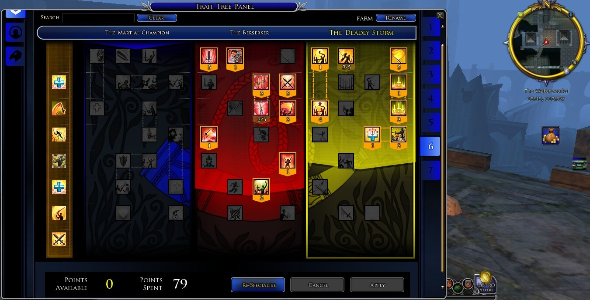

作者：Arthurpurgare 来源贴吧
上个月把技能点拿齐就想发个帖讨论下，但是想了想没啥讨论意义，因为特性搭配千变万化，随时要改变风格，以千变万化应对牛鬼蛇神，主要是没有定性，你必须随时的变化，不过为省时省钱考虑，还得要搞很多固定特性 加点不是啥高端技术，更没有权威，相互讨论学习,没有最好，也没有最适合，只有不断变化。 by作者
红黄特
作为斗士，这是最喜欢的了，有了这个特性，一匹马一把剑，中土任我闯。最符合斗士特质的技能。
红蓝特
近战肉搏1v1，红特点出太多的废物技能应该用于黄特，考虑到战场的复杂，并且这个tx不能单单作为1v1，就把低耗 决斗 击杀回血等都点出了，哎。。。目前的技能点决定了单体情况下，黄蓝不能兼顾的事实。
黄特
伊顿荒原双持疯狂群攻吧。
蓝红特1
solo单一boss，没把群攻点出来，不自在啊，不过当t或者风筝的时候再点吧，反正不常用。
蓝红特2
与tx1作用相似，蓝特狂战士。
黄红特1
这个tx也是我很喜欢的特性，很实惠的tx，真的超级实惠，去那些强度不是很高但是也不低的副本或野外，你就一个劲的刷吧，来越多怪越好，例如图书馆或学院，我都是从头拉倒尾，两个字就是效率！
黄红特2
红特黄特最完美的混合！最强dpstx，带上双手大宝剑 下副本；挑战dps，最好的选择。